La blockchain
Étudiant @ISEN_Lille
@RomainBouye
Oui mais Bitcoin c'est quoi ?
Un protocole pour une monnaie "virtuelle" aux propriétés similaires au cash $$
Transaction en argent liquide
Transaction en chèque, CB, Paypal
Comment faire une cryptocurrency comme Bitcoin ?
Rareté de la monnaie ?
Un registre unique mais décentralisé ?
Un registré vérifié par tous et ouvert à tous
La Blockchain
Outil de cryptographie important :
Les Sommes de contrôle
"Checksum" ou "Hash"
"information" -> 83a36ab3779f4b...
"informations" -> 2a98e28d4336b7...
Mini démo
Une chaine de blocs à validité imbriquée

Mais que contient un bloc ?
Bloc
- Hash du bloc précédent
- Date de création (miné)
- Preuve de travail
- Difficulté de minage
- Totalité des transactions
- ...
Transaction
- hash
- valeur
- clé publique émetteur
- clé publique destinataire
- ...
Création simultanée
La chaine la plus longue est validée.

Les Limites
- Augmentation de la taille de la blockchain
- Vitesse de validation des transactions
- Pas anonyme
- Difficulté croissante du minage
Autres utilisations d'une blockchain
Les "Altcoins"
- Litecoin
- Namecoin
- Twister
Différents clients Bitcoin :
- Bitcoin core (bitcoin-qt) : télécharge l'intégralité de la blockchain (~20Go)
- Clients légers : Multibit, Application Android
Clef du succès :
- Logiciel libre
- Architecture décentralisée
- Cryptographie